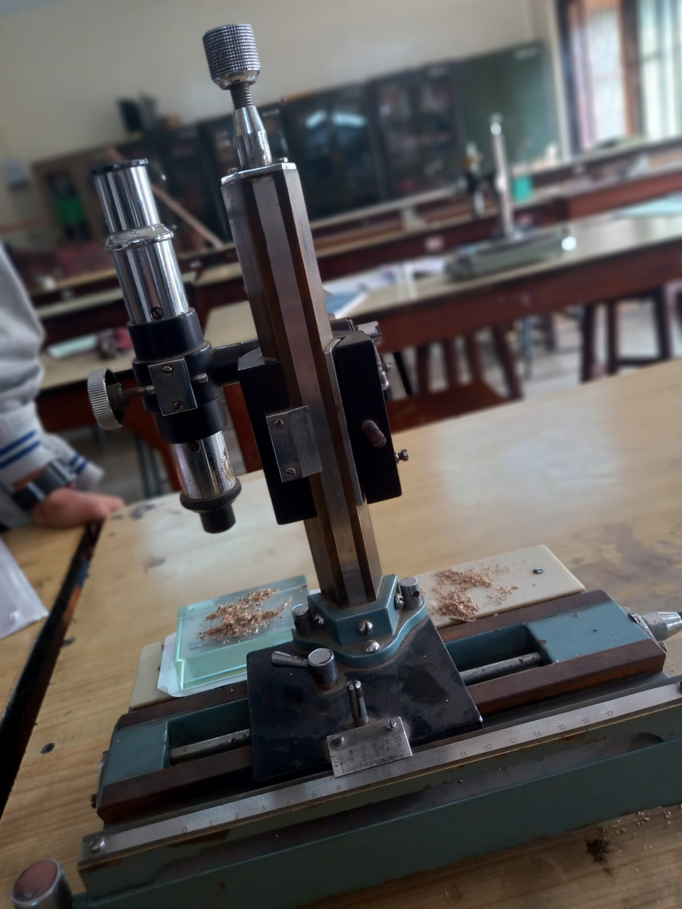
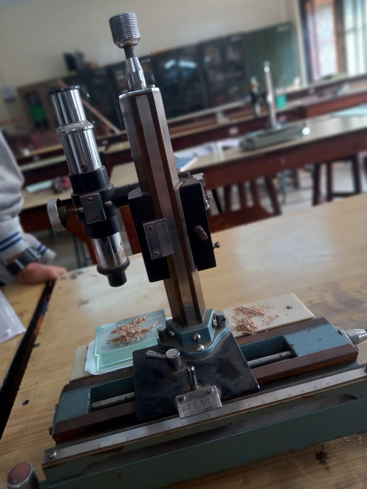

Laboratory structure in our college
A laboratory is a place where scientific research,
experimentation, and analysis are conducted.
The structure of a laboratory is important
ensuring that the work being done is safe,
efficient, and accurate
 

1. Layout: The layout of laboratory should be designed
in a way that promotes efficiency and safety.
This includes seperating hazardous materials
from areas where people work, having clear unobstructed
paths from movement,
and having a clearing line of sight between workstations.
2. Equipment: a laboratory typically contains a variety of equipment
such as microscopes, centrifuges, and computers.
The equipment should be organized in a way that allows easyd
access and use, and it should be regularly maintained to ensure
it is in good working order.
3. Safety measures: safety is of utmost importance in a laboratory.
This includes having safety equipment, such as eye wash stations
and fire extinguishers, readily available.
It also includes proper handling of hazardous materials, such as
chemicals and biological agents, and the use of personal protective
equipment, such as lab coats and gloves.
4. Documentation: Accurate Documentation is essential in a laboratory.
This includes keeping records of experiments, results, and any deviations
from standard procedures.
Documentation helps ensure that experiments can be repeated and
verified, and it helps ensure that the work being done of height quality.
Overall, the structure of a laboratory is designed to promote efficiency, safety, and
accuracy in the work being done.
By following proper laboratory protocols and procedures, researchers can ensure that
their work is conducted in a safe and reliable manner.